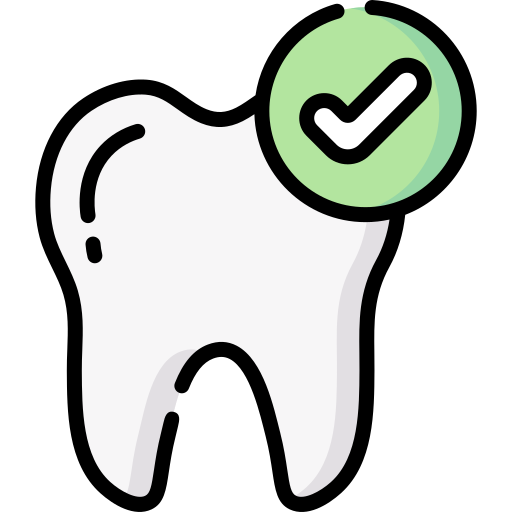

POLIKLINIK
UPTD RSUD PANTI NUGROHO
Kembali
UPTD RSUD PANTI NUGROHO PURBALINGGA - MELAYANI SEPENUH HATI
Poli Kebidanan dan Kandungan
Poli Anak
Poli Penyakit Dalam
Poli Bedah
Poli Gigi & Mulut

Poli Neurologi ( Saraf )
Poli THT-KL
Poli Kulit & Kelamin